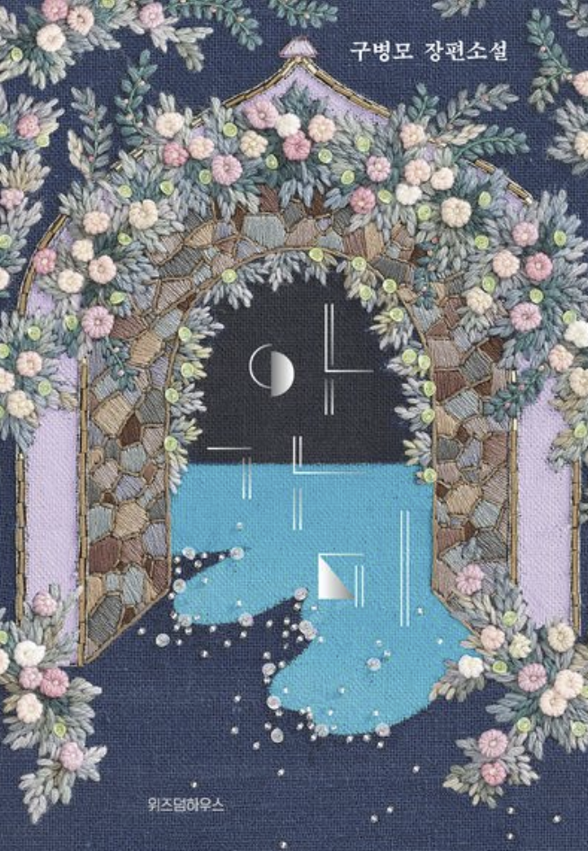
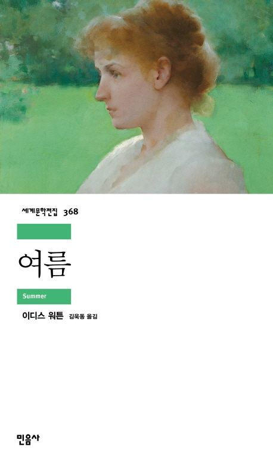
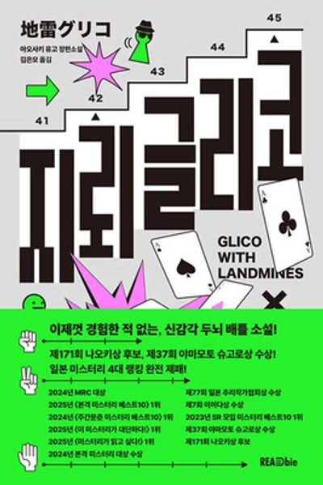

교환독서
홈
도서관
일정
게시판
프로필
ARCHIVE COLLECTION
서재의 서가
책장에 꽂힌 책에 손을 얹어보세요. 머물렀던 흔적들이 책장을 열어줍니다.
📖 지금 읽는 중 (5)
📚 완독한 서가 (7)
전체 추천인
시현
태이
희수
지원
민지
전체 장르
소설/문학
SF/판타지
인문/교양
에세이
나는 소망한다 내게 금지된 것을
SH-03
자세히 보기 ➔
달러구트 꿈 백화점
0
TE-03
자세히 보기 ➔
아가미
MJ-01

자세히 보기 ➔
자본주의
JW-02
자세히 보기 ➔
프로젝트 헤일메리
HS-03
자세히 보기 ➔
궤도의 밖에서, 나의 룸메이트에게
HS-02
기록 보기 ➔
다정한 사람이 이긴다
JW-01
기록 보기 ➔
바깥은 여름
SH-02
기록 보기 ➔
여름
SH-01

기록 보기 ➔
일억 번째 여름
HS-01
기록 보기 ➔
지구 끝의 온실
TE-01
기록 보기 ➔
지뢰 글리코
TE-02

기록 보기 ➔
서가에서 일치하는 도서를 찾지 못했습니다.